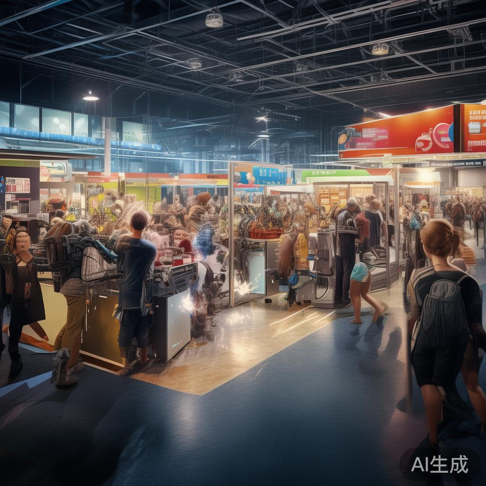
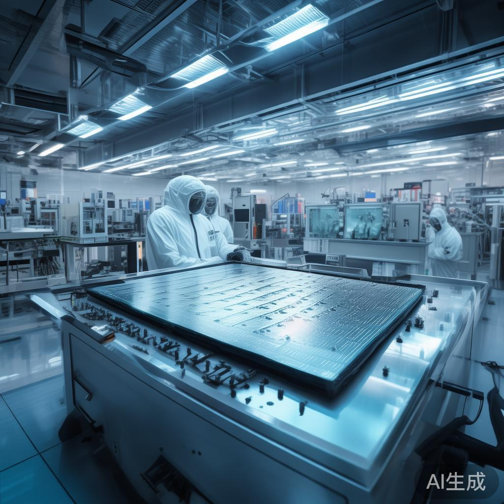
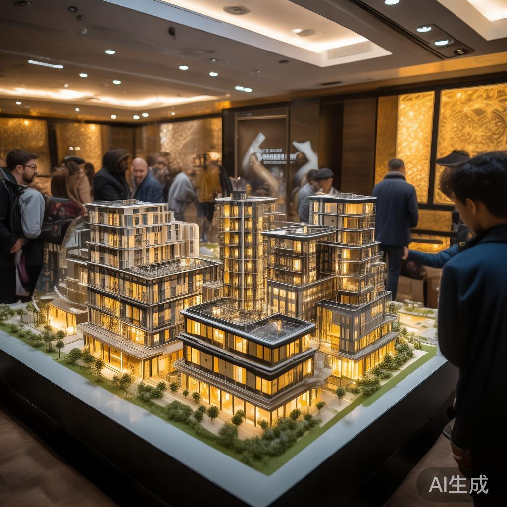
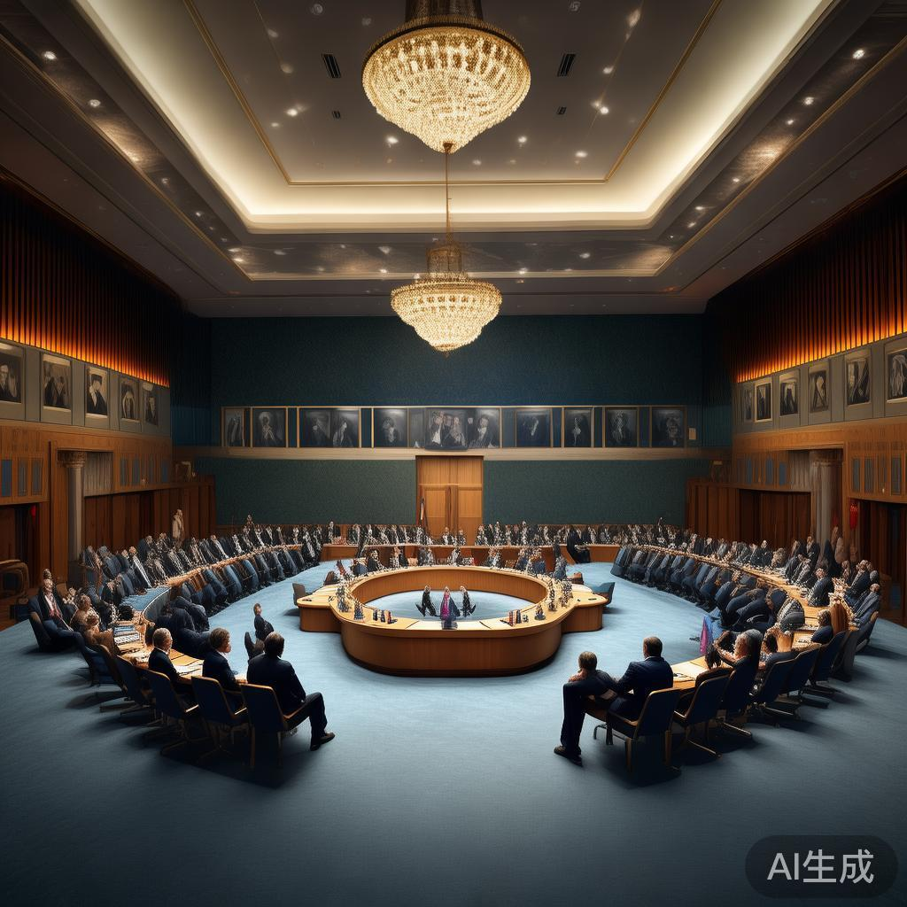

01
习近平抵达华盛顿 特朗普机场热情迎接
当地时间9月23日下午，国家主席习近平乘专机抵达华盛顿安德鲁斯空军基地，应美国总统特朗普邀请对美国进行国事访问。中美元首半年内实现互访，被外界视为历史性里程碑。
国际
当地时间9月23日下午，国家主席习近平乘专机抵达华盛顿安德鲁斯空军基地，应美国总统特朗普邀请对美国进行国事访问。中美元首半年内实现互访，被外界视为历史性里程碑。
今天出版的《人民日报》第9版整版刊发调查报道，聚焦上海历史性解决老城区居民"拎马桶"问题，指出高质量推进城市更新是城市现代化建设的重要抓手。

9月23日，随着第48届世界技能大赛全面开赛，世界技能博览会也于同期亮相。丰富的技能体验之外，博览会成为各国代表团与观众以技会友、交流互鉴的平台。
据央视新闻客户端报道，"花1万元就能拿到'中字头'机构食品背书"等话题引发热议。工人日报刊文追问身份迷雾重重的"中食办"为何大行其道，食品认证乱象亟待整治。
即将70岁的作家叶兆言依然在努力写作。他表示比起"著名作家"的称呼，更喜欢"职业作家"这个叫法，就像职业运动员一样，写作是一种需要长期坚持的职业。
一款宣称"睡前一垫一滴一夹"三步入眠的助眠产品广告引发关注。实测发现该睡眠仪高档位使用时让人头晕恶心，宣传效果与实际体验存在明显差距。
福建省农业农村厅、省农科院启动实施"农科+农垦"行动计划，以产学研用深度融合打通农业科技成果落地堵点，坚持需求导向、精准赋能、协同创新原则。
第五届全球数字贸易博览会数字医疗健康产业对接活动上，浙江省首批14家医学人工智能临床验证中心揭牌，"医疗Token工厂"1.0版本同步首发，面向全国免费试用。
受美国可能实施出口禁令影响，欧洲柴油价格开盘上涨0.6%。市场对能源供应链的担忧情绪升温，欧洲能源价格波动加剧。
日经225指数上午开盘报65476.44点，涨幅0.7%。韩国股市因节假日休市一日，亚洲股市走势分化。
经济日报金观平刊文称，数字贸易已成为拉动全球经济增长的重要引擎。9月23日至27日，第五届全球数字贸易博览会在杭州召开，我国数字贸易蓬勃发展。
日本30年期国债收益率上升6个基点至4.13%，长端利率持续走高。市场关注日本央行货币政策走向及全球债券市场联动效应。

韩国总统李在明在纽约"韩国投资峰会"上公布雄心勃勃的计划，旨在将韩国半导体产能翻倍，确保AI供应链免受外部冲击，同时呼吁美国加大对韩国投资。
中信建投指出，当前全球宏观形势有"五个不确定与五个确定"，主要受AI科技革命、国际货币变革和地缘冲突影响，内核是生产力变革与生产关系调整的集中映射。
META宣布RAY-BAN Meta智能音频眼镜将于10月13日出货，售价349美元，现已开启预订。RAY-BAN META第三代今日上市，起售价449美元。
泰和新材在接待机构调研时表示，发光纤维产品研发成功，第一代产品已根据下游客户反馈持续优化，今年落地最快的应用是汽车内饰，终端为整车厂。

据证券日报，9月是房地产市场传统旺季，旺季特征已有所显现。中指研究院数据显示，截至9月20日，重点30城新建商品住宅成交面积同比微增1.4%。
Meta推出售价1299美元的虚拟现实眼镜，处理器、散热风扇、电池等计算组件均内置于外部计算包中，可挂在口袋上或放桌上，代表头显设计的重大转变。

OpenAI首席执行官Sam Altman和Anthropic首席执行官Dario Amodei罕见出现在联合国安理会会议上，敦促各国领导人在人工智能领域合作，聚焦AI生存威胁议题。
1982年9月24日，邓小平会见英国首相撒切尔夫人，阐述中国政府对香港问题的基本立场，指出主权问题不是一个可以讨论的问题。
💬 评论区